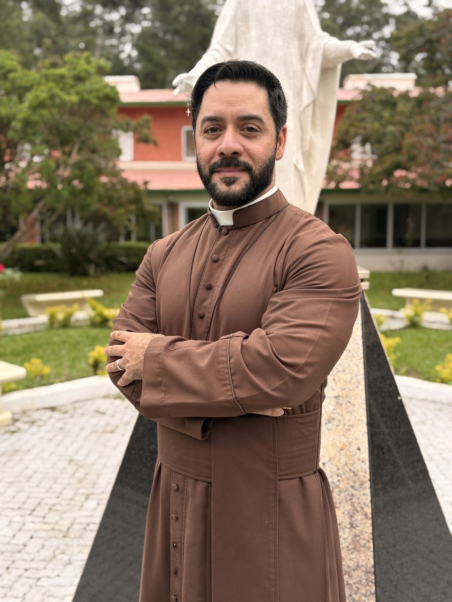
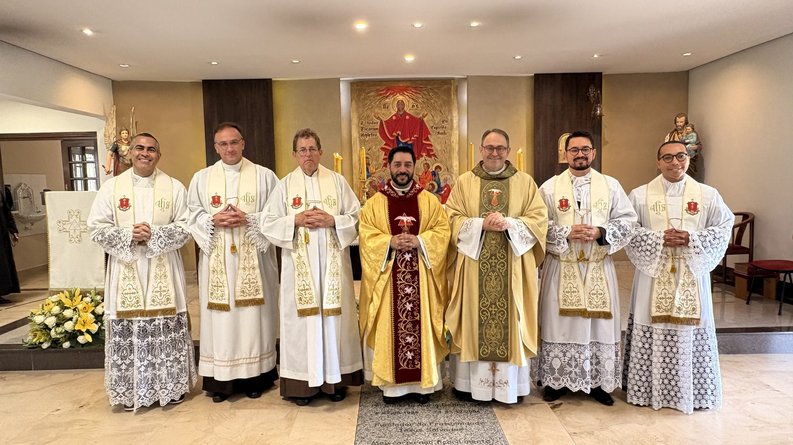

Sobre o Instituto
Governo Geral
A estrutura de governo do Instituto Missionário Servos de Jesus Salvador, ontem e hoje.
Governo atual
Prior Geral

Pe. Myguel Tostes, sjs
Prior GeralFoto — Vigário Geral
[Nome], sjs
Vigário GeralFoto — Conselheiro
[Nome], sjs
1º ConselheiroFoto — Ecônomo Geral
[Nome], sjs
Ecônomo GeralOrdenação e vida em comunhão
O Governo Geral reunido

Memória Institucional
Priores Gerais que já passaram
Fundador · [período a definir]
Pe. Gilberto Maria Defina, sjs
Fundador da Fraternidade Jesus Salvador.
[período a definir]
[Nome do Prior Geral], sjs
[período a definir]
[Nome do Prior Geral], sjs
Atual
Pe. Myguel Tostes, sjs
| Cargo | Responsabilidade |
|---|---|
| Prior Geral | Superior maior do Instituto; representa e conduz a Fraternidade. |
| Vigário Geral | Auxilia e substitui o Prior Geral em suas atribuições. |
| Conselho Geral | Colabora no governo e nas decisões institucionais. |
| Ecônomo Geral | Responsável pela administração dos bens do Instituto. |
| Secretário Geral | Responsável pelos registros e documentos oficiais. |